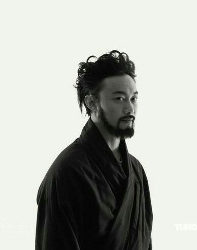
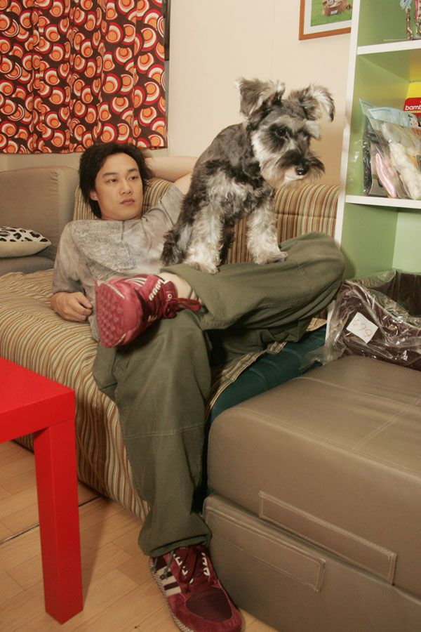
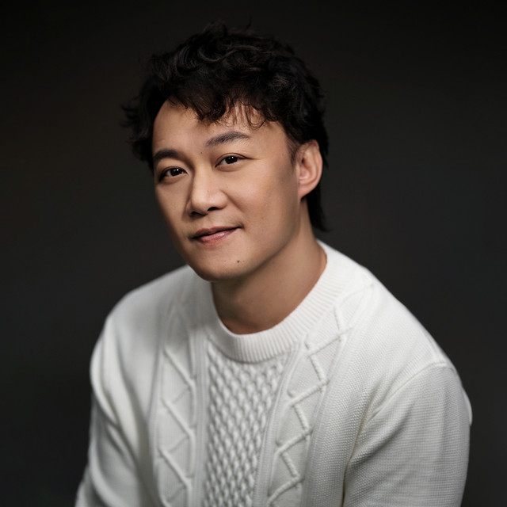

Eason Chan was born in 1974 july 27 is a well-known Chinese and cantonese male singer and actor, but actor is last time. He is also one of the most influential singers in Hong Kong and China. Since he start his music career in 1995, He has released more than 40 album and won many award. Besides it also hold the record for winning the "Ultimate Male Singer" award 10 times.
He is famous for his emotional singing, strong voice, and unique music style. Eason often tries new idea in his song and tell meaningful stories or quotes. His popular song include"ten years", "sui yue ru ge", "sha long", "fu shi shang xia" and etc
 Instagram
Instagram